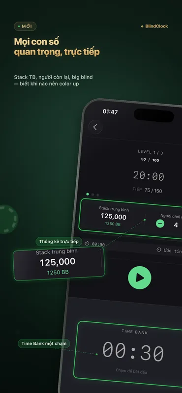
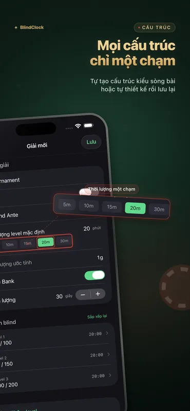
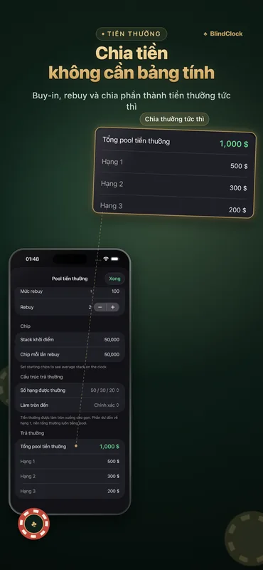

Tất cả những gì một người chủ trì cần
Thiết kế cho ván chơi tại nhà và giải đấu câu lạc bộ — chính xác cả khi tắt màn hình, đọc rõ từ đầu kia bàn.
Đồng hồ giải đấu chính xác
Tạm dừng, chạy tiếp hay bỏ qua mức tùy bạn. Đồng hồ vẫn chính xác khi chạy nền và sống sót sau khi tắt cưỡng bức — chơi tiếp ngay từ chỗ đang dừng.
Trình tạo cấu trúc mức mù
Cho biết số người chơi, số chip và thời lượng mong muốn — nhận ngay một cấu trúc gọn gàng, kiểu casino, kèm giờ nghỉ chỉ với một chạm.
Máy tính chia thưởng
Buy-in, rebuy và cách chia giải được tính ngay tại chỗ — kết sổ cuối buổi mà không cần bảng tính.
Time bank
Cho người chơi thêm thời gian ra quyết định với time bank tùy chỉnh, đầy đủ cảnh báo và âm thanh.
Live Activity & Dynamic Island
Mức hiện tại luôn hiển thị trên Màn hình khóa và Dynamic Island. Khi iPhone đang sạc, StandBy biến nó thành đồng hồ giải đấu toàn màn hình.
Chế độ hiển thị bàn chơi trên iPad
Xoay iPad sang ngang để có bộ đếm ngược khổng lồ với mức mù ở hai bên — cả bàn đọc được trong nháy mắt, và màn hình luôn sáng.
Chia sẻ mẫu giải đấu
Xuất bất kỳ giải đấu nào thành tệp .blindclock rồi AirDrop cho bạn bè — họ nhập đúng cấu trúc của bạn chỉ với một chạm.
Đồng bộ iCloud
Các mẫu giải đấu của bạn tự động theo bạn giữa iPhone và iPad — miễn phí cho mọi người.
Xem ứng dụng hoạt động



Ví dụ cấu trúc mức mù
Một cấu trúc gọn gàng trông thế này: turbo kết thúc trong khoảng 1,5 giờ, ván tại nhà tiêu chuẩn khoảng 3 giờ, deep stack từ 4,5 giờ trở lên. Trình tạo của BlindClock dựng cấu trúc theo đúng số người chơi, số chip và thời lượng mục tiêu của bạn chỉ với một chạm.
| Cấp | Turbo · 15 phút | Tiêu chuẩn · 20 phút | Deep stack · 30 phút |
|---|---|---|---|
| 1 | 25 / 50 | 25 / 50 | 25 / 50 |
| 2 | 50 / 100 | 50 / 100 | 50 / 100 |
| 3 | 100 / 200 | 75 / 150 | 75 / 150 |
| 4 | 200 / 400 | 100 / 200 | 100 / 200 |
| 5 | 300 / 600 | 150 / 300 | 150 / 300 |
| 6 | 500 / 1000 | 200 / 400 | 200 / 400 |
| 7 | — | 300 / 600 | 250 / 500 |
| 8 | — | 400 / 800 | 300 / 600 |
| 9 | — | 500 / 1000 | 400 / 800 |
| Chip khởi điểm | 5,000 | 5,000 | 10,000 |
Mức mù ghi theo small blind / big blind. Thêm 10 phút nghỉ sau mỗi bốn đến năm cấp — trình tạo của BlindClock tự sắp xếp giờ nghỉ.
Hướng dẫn đầy đủ (tiếng Anh): cách tổ chức giải poker tại nhà →
Có gì mới trong 2.1
- Thống kê bàn chơi trực tiếp — stack trung bình, số người chơi còn lại và stack trung bình quy ra big blind, cập nhật ở mỗi cấp — ngay trên màn hình đồng hồ.
- Biết khi nào nên color up — con số mà người tổ chức nghiêm túc luôn theo dõi: khi nào nên color up, khi nào bàn chia giải, giải đấu đang diễn ra với nhịp độ thực sự ra sao. Chạm để loại một người chơi. Miễn phí cho mọi người.
- Khởi động nhanh hơn & tinh chỉnh — màn hình khởi động mới và các tinh chỉnh khắp ứng dụng.
BlindClock Pro
Bản miễn phí chơi được trọn vẹn — đồng hồ, Live Activity, trình tạo cấu trúc, chia thưởng, đồng bộ và tối đa 5 giải đấu tùy chỉnh. Pro gỡ bỏ giới hạn này chỉ với một lần mua, vĩnh viễn, trên mọi thiết bị của bạn.
- Giải đấu tùy chỉnh không giới hạn
- Mua một lần
- Không quảng cáo, không thuê bao
- Tất cả thiết bị của bạn